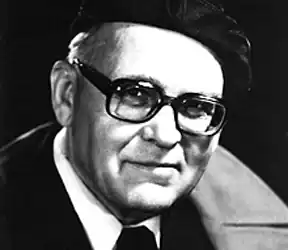

У гроно талановитих майстрів української прози повоєнного часу ім'я Анатолія Дімарова вписувалося повільно й важко. Принаймні, офіційне його визнання припізнилося на два десятиліття, коли брати за точку відліку 60-ті роки, впродовж яких одна за одною виходили частини роману "І будуть люди" (1964, 1966, 1968). Лише за останню — "Біль і гнів" (1974, 1980) автор був удостоєний Шевченківської премії.
Втім, читацький загал визнав А. Дімарова ще раніше; перші романи "Його сім'я" (1956) та "Ідол" (1961) були досить популярними, хоча великої преси не мали.
На сьогодні доробок А. Дімарова вже хто зна чи й умістився б у добрий десяток томів. Загальномистецька їхня вартість, звичайно, не в усьому однакова, оскільки мінявся не лише час, а й художні смаки. Мінявся й сам автор, що розпочав життєвий шлях в учительській сім'ї на Полтавщині (народився 5 травня 1922p.), встиг воювати, ковтнув повітря окупації і навіть деякий час партизанив. Феномен дімарівського стилю має дві виразні ознаки: глибоко народний психоколорит і пов'язану з ним оповідність вираження через слово і в слові. Недарма найулюбленішим жанром письменника в роки творчої зрілості стали ним у прозі узаконені "історії" — сільські, містечкові, міські — себто художні структури, де авторство розчиняється в матеріалі, що виповідає себе "сам". Його внесок у новітню українську прозу, можливо, тим непересічний, що майже адекватно виражає народне пережиття історії. Стверджувати, що ця історія надто відрізняється од офіційних чи наукових її версій, може, й не варто: події та "етапи" і там, і там практично тотожні. А факти — різні. Так, революція, громадянська війна, сталінські й окупаційні жахи мали б народ, здавалося, коли не підкосити, то морально втомити. Та й ближчі до нас часи вимивали в ньому багато з того, що, подібно до гумусу, формувалося віками й так само, як цей родючий шар, в лічені роки не відновлюється. Але ж і не в лічені нищиться. Роман "І будуть люди", який з отого шару увібрав добру третину, досить детально унаочнює, що ж саме — коли не здобув, то з усіх сил беріг — і зберіг! — наш проріджуваний революцією та громадянською війною, сортований колективізацією й смертно вдарений голодомором українець у тому минулому, од якого найлегше було б раз і назавжди відхреститися. Десятки дімаровських героїв, переживши голодомор, ходили залюбки на лекції, які "читав" їхній же сільський комсомолець Твердохліб, і, мов діти, скаржилися на нього районному начальству за те, що "забороняє Володька танцювати в сільбуді, каже, що то вже буржуйські пережитки. А співать дозволяє тільки "Інтернаціонал"... — А ви б, може, "Галю" хотіли? — ще з більшим запалом Володя. — А хоть би й "Галю"! Чим погана пісня? — Тим, що її класові вороги співали!" Думку про людяність цих людей автор виніс у заголовок свого роману не тому, що її шукав серед них, а щоб явити її читачеві "євангельськи" — як сущу, якою вона є, була й пребуде там, де нею тільки й рятувались. Епопея Дімарова цю рятівну силу передає навіть самою інтонаційною палітрою авторської розповіді, щедрої на все, чим народ оберігав себе од душевної черствості та оглухлості, що мертвлять кожного, хто не помітив, як за ідейною пильністю втратив здатність розрізняти добре і зле. Війну перемогло саме народне життя. "Болем і гнівом" письменник стверджує це пристрасно, доконано, завершуючи свою величну фреску окупаційного лихоліття епізодом, що найвиразніше оголює полемічний нерв усієї епопеї. Єдина на всю спалену Тарасівку жінка Ганна Лавриненко відтягла з подвір'я мертвого німця, намила картоплі, знайшла обгорілий шолом і мовчки заходилася варити в нім нехитру селянську їжу. "Отой шолом і привернув увагу військових. Військові в'їхали у спалене село вантажною машиною: двоє в кабіні, двоє у кузові, й одразу ж побачили Ганну, яка сиділа застигло над вогнищем. Військові були з фронтової газети, і один із них, наймолодший, аж шию витягнув, бо вгледів, у чому варить Ганна картоплю. Він одразу ж подумав, що неодмінно напише про цю жінку і шолом, він складав уже подумки фрази, красиві й гучні: про війну, про звитягу наших солдатів, про безсмертя народу. А Ганна ні про що те не думала: Ганна просто варила картоплю". У цьому "просто варила картоплю" і є весь Дімаров, як мислитель і як художник. Таким він постає і в сільських, містечкових та міських "історіях", кількість яких зростає, а зміст соціально ширшає й поглиблюється. Започатковані вони були збіркою "Зінське щеня" (1969), що народжувалась у полтавському хуторі Малий Тікач, мешканці якого, як це й трапляється в усіх відстояних сільських громадах, "породичалися" з більшістю людських цнот і вад, зогріваючи й караючи ними не лише сусідів, а й самих себе. У нього, в цей праліс, де побувала війна, похазяйнували повоєнні нестатки та нехлюйство, і заводить читача сільськими своїми історіями А. Дімаров. Роблячи це не для пейзанських захоплень і не для ілюстрації сумнозвісної сільської "дикості", а для того, щоб вникнути в таїну життєстійкості одних і самознищення інших. Ці соціально та психологічно болючі питання зринають і після знайомства з книжкою "Постріли Уляни Кащук" (1978), — вона разом з попередньою увійшла до підсумкового видання А. Дімарова "Сільські історії" (1987). Більшість її персонажів — теж люди літні, їм довелося дивитись у вічі найстрашнішому лихові — насильницькій смерті, яка в роки війни сліпо й легко косила всіх підряд, а ось біля них кружляла довше, одержуючи, бува, облизня. І часто через те, що боялись вони передусім не її, а осуду власної совісті. Посутньо про таке, як у війні, але безкровне вже прорідження реліктово "чистих" народних натур, їхнє поступове струхлявіння чи то в болоті застійного побуту, чи в духовно пісному грунті сучасних мегаполісів розмірковує А. Дімаров у книжках "Містечкові історії" (1987) та "Боги на продаж. Міські історії" (1988). Обидві вони густо населені людьми, чиї здебільшого скособочені долі свідчать про явну кризу цінностей, що їх держава мала, з одного боку, за моральний абсолют, а з іншого — чи не щодень ігнорувала. Нехтуючи при тому й характери, де ті цінності прижились, аби врешті-решт стати разом з їхніми носіями нікому не потрібними. А бува, й офіційно переслідуваними, як це сталося з молодим робітником ("Термінальна історія"): боротьбою з приписками він тільки того й добився, що судової справи проти себе. Таку ж неможливість пробитися бодай до здорового глузду, який подеколи підміняв усунуту з офіційних установ совісність, ілюструють трагічні історії доведеної до самогубства школярки ("Дітям до шістнадцяти"), котрій її ж учителі грубо інкримінували розпусту; або молодого зятя, що прийшов у сім'ю нареченої з крилами, але під тиском міщанського пресу мусив їх потайки пообтинати ("Крила"). Звична для дімаровського стилю, де зболена, а де й навдивовижу терпляча (од самої ж бо людини у цім світі залежить далеко не все), просвітленість інтонаційної палітри письма у згаданих і подібних до них творах ("До сина", "Жизнь є жизнь", "Медалі", "Білі троянди, червоні троянди", "Дзвони") з часом відчутно загасає, поступаючись місцем дедалі важче стримуваному сарказму. Особливо у творах "Попіл Клааса", "В тіні Сталіна", де на авансцену виходять раніш недосяжні для художнього заглиблення зловісні тіні минулого. Робити з цього висновок щодо якихось докорінних змін манери письма, звісно, не варто: вона коли й робить якісь поступки, то лише матеріалові чергової оповіді. Це засвідчує й коротка повість "Самосуд" (1990), в основу якої ліг випадок, відомий авторові ще з часів війни, коли жіноцтво накинулось на арештованого німцями енкаведиста, що морив їхній район голодом, і самочинно його покарало. Слід гадати, що схожі з цією повістю твори, які або вийшли вже друком (скажімо, "Притча про хліб" — вилучені колись із роману "І будуть люди" глави про 33-й рік), або тільки автором замислюються, ставлять метою доповнити картину всенародного життя од революції до наших днів. Їхню вартість для майбутнього важко переоцінити, йдеться ж бо про високохудожній доробок, в якому розлите не тільки співчуття до народу, а й гордість за нього. Негучна і без оскомних ідейних узагальнень. На цім у Анатолія Дімарова грунтується все — од наскрізного пафосу малих і великих епічних полотен до найдрібніших елементів змісту й стилю, що в єдності своїй творять художній світ, куди олжі шлях був заказаний. Як офіційній, так і літературній. Г. Штонь Історія української літератури ХХ ст. — Кн. 2. — К.: Либідь, 1998.